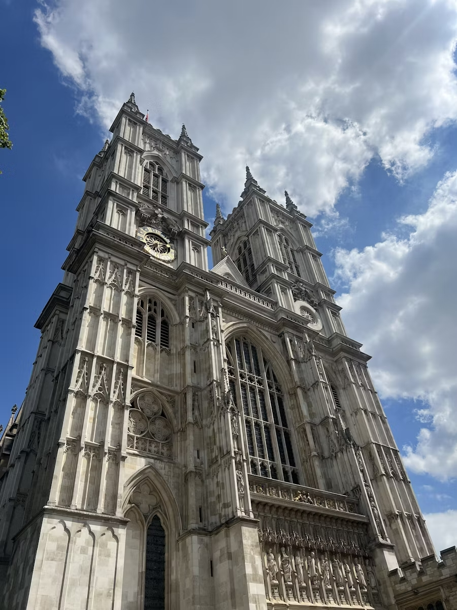
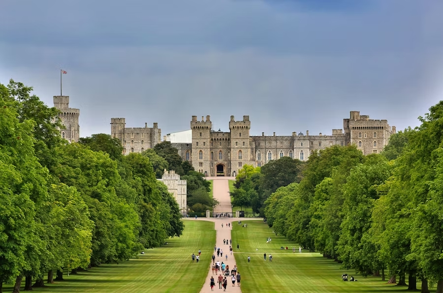

English Architectural History
Development of English Architecture
English architecture has evolved over centuries, influenced by Roman, Norman, Gothic, Tudor, and Victorian periods. It features styles ranging from medieval castles and cathedrals to Georgian symmetry and Victorian ornamentation.
The transition from timber to stone and brick, along with technological advancements during the Industrial Revolution, helped define modern urban landscapes throughout England.
 